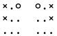
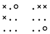
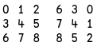

Reinforcement Learning with MENACE¶
Dealing with symmetries¶
Michie made three simplifications to simplify the construction and to reduce the number of matchboxes that MENACE needed.
Rotations and reflections of a configuration were treated as the same.
Layouts were removed if the opponent had won.
In the initial version, MENACE always played first.
In this notebook we’ll explore rotations and reflections of the O-X-O board.
First, we’ll load in the work we did in the previous notebook.
)copy notebook1
)copy notebook2 brings in the functions and variables we saved earlier, so we can use them in this notebook.
We can see what functions are defined by using )fns. That’s another APL system command.
)fns
We’ve one more thing to do before we start. )Copy does not copy ⎕io (the index origin we start counting from).
We need to set that to zero again.
⎕io ← 0
Now we’ll see how Michie reduced the number of board positions he had to consider.
Dealing with symmetries¶
What are symmetries?
Symmetries (in the mathematical sense) are transformations that help us how to identify board positions that look different but which we can regard as the same.
Here’s an example - a board and its reflection.

The reflection symmetry¶
We can imagine a pair of games in which each game is a mirror version of the other.
At each stage in the game the possible moves will be the same when reflected in the mirror.
If a player wins in one game the mirror player will win in the mirror game.
Studying the mirror game tells us nothing new. We only need to consider the un-reflected game.
Rotation symmetries¶
Reflection is not the only way to create a symmetry. We can say the same things about two games in which the board has been turned upside down
in other words, rotated through 180 degrees.
Here’s a pair of boards which have been rotated like that.

Eight symmetries¶
There are eight possible symmetries based on rotation and reflection.
We can leave the board un-rotated or turn it though 90, 180 0r 270 degrees. We can leave those four as they are, and we can also reflect each in a mirror.
How can we apply one of these transformations to a given board configuration?
Let’s start by looking at a reflection.
If we paint a number from zero to eight on each square of the board it would look like this:
⊢ start ← 3 3⍴⍳9
APL has a primitive function reverse ⌽ that reverses its argument. Let’s apply it
⌽start
Applying a reflection¶
We can reflect a board configuration by permuting the numbers in it. Since we are representing out boards as vectors, we can just use indexing to apply the permutation.
Here’s an example.
show board1 ← 1 1 0 0 2 2 0 1 0
show board1[2 1 0 5 4 3 8 7 6]
I got the index numbers by turning the matrix ⌽start into a vector.
In APL you can do that using the function ravel which is represented by ,
,⌽start
How about rotations?¶
Here’s our numbered board next to the board rotated by 90 degrees.

If we ravel the matrix on the right we can see the permutation vector that represents that rotation is 6 3 0 7 4 1 8 5 2.
We can define a couple of functions that will reflect a board or rotate it by 90 degrees.
In these and many later code fragments we will use lamp ⍝.
That’s the APL comment symbol. APL will ignore everything on the rest of the line after a ⍝
m ← {⍵[2 1 0 5 4 3 8 7 6]} ⍝ mirror reflection
r ← {⍵[6 3 0 7 4 1 8 5 2]} ⍝ rotation
show ¨ board1 (m board1) (r board1)
Let’s generate the permutations for all eight symmetries.
First we’ll create the rotations.
i ← ⍳9
r90 ← r i ⍝ one rotation by 90 degrees
r180 ← r r90 ⍝ two consecutive rotations - 180 degrees
r270 ← r r180 ⍝ three - 270 degrees
Now for the reflected versions.
mi ← m ⍳9
mr90 ← m r90
mr180 ← m r180
mr270 ← m r270
We can combine them and show the result.
+symmetries ← ↑ i r90 r180 r270 mi mr90 mr180 mr270
Now we can generate and display all the symmetries of a given position.
list board1[symmetries]
)save notebook2 -force
Next we’ll start looking at the implementation of the game.
)fns